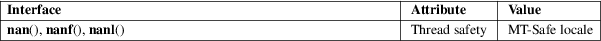

nan, nanf, nanl − return ’Not a Number’
Math library (libm, −lm)
#include <math.h>
double
nan(const char *tagp);
float nanf(const char *tagp);
long double nanl(const char *tagp);
Feature Test Macro Requirements for glibc (see feature_test_macros(7)):
nan(),
nanf(), nanl():
_ISOC99_SOURCE || _POSIX_C_SOURCE >= 200112L
These functions return a representation (determined by tagp) of a quiet NaN. If the implementation does not support quiet NaNs, these functions return zero.
The call nan("char−sequence") is equivalent to:
strtod("NAN(char−sequence)", NULL);
Similarly, calls to nanf() and nanl() are equivalent to analogous calls to strtof(3) and strtold(3).
The argument tagp is used in an unspecified manner. On IEEE 754 systems, there are many representations of NaN, and tagp selects one. On other systems it may do nothing.
For an explanation of the terms used in this section, see attributes(7).

C11, POSIX.1-2008.
See also IEC 559 and the appendix with recommended functions in IEEE 754/IEEE 854.
glibc 2.1. C99, POSIX.1-2001.
isnan(3), strtod(3), math_error(7)